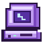
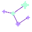
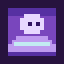
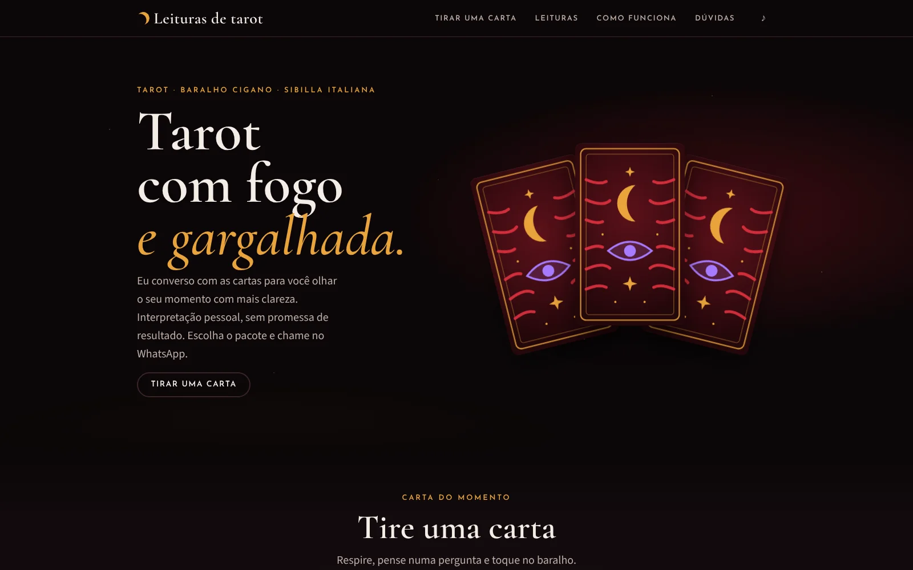
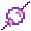

Ecossistema de Landing Pages
Páginas de serviços e campanhas que desenvolvi para a Locatelli, com foco na mensagem, na experiência e no caminho até o contato.
Páginas publicadas, experimentos e estudos
Marketing, experiência e código.
Growth, UX e
engenharia de produto.
Sou o Diogo, também conhecido como Deokyo. Trabalho com marketing, UX e desenvolvimento para transformar ideias em páginas e produtos digitais.
01 / Trabalhos
Aqui estão os projetos que desenvolvo para empresas, de landing pages a ferramentas internas.
Páginas de serviços e campanhas que desenvolvi para a Locatelli, com foco na mensagem, na experiência e no caminho até o contato.
Páginas publicadas, experimentos e estudos

Produtos internosExperiências, operação e visualização de projetos2 projetos
Um programa de indicações internas com navegação por territórios, ranking e uma área de gestão.
Em desenvolvimento

Locatelli Group / Protótipo
Uma proposta para acompanhar projetos técnicos de forma visual, com módulos, relações e uma linha do tempo.

Projetos para clientesSites e páginas de clientes independentes1 projeto
Site de leituras de tarot e baralho cigano, com pacotes, sorteio de cartas com efeito e som por arcano. Ainda não publicado, com textos em revisão pela cliente.
Protótipo, sem publicação
02 / Exploração independente
Projetos que desenvolvo por curiosidade e vontade de aprender algo novo.
Projeto pessoal de estudo
Um app Android para comparar ofertas, acompanhar a jornada e consultar custos e histórico. Um estudo pessoal que estou desenvolvendo.
Android · Projeto experimental
Explorar o estudoEstudos de landing page
Duas demos fictícias feitas com um kit próprio de landing pages, com movimento, WebGL, shader e vitrine de componentes.
Demos fictícias · Em revisão
Ver os estudos03 / Como trabalho
Gosto de entender o problema antes de desenhar a solução. Organizo a mensagem e a experiência, penso no caminho de quem vai usar e levo isso para a interface e o código.
Nos cases, conto o que motivou cada projeto, as escolhas que fiz e o que construí.
04 / Conexões profissionais

Diogo Mussi
Growth, UX e engenharia de produto.
Quer conhecer melhor meu trabalho ou trocar uma ideia? Me encontra no LinkedIn. Também compartilho projetos e estudos no GitHub.